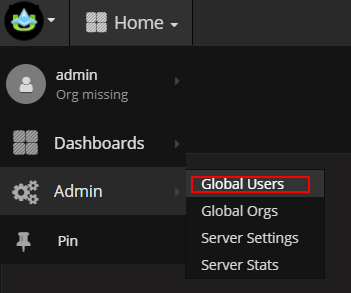
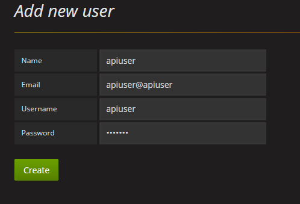
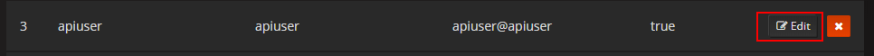

Grafana
Grafana is integrated in the Intelligence Center to display OpenTSDB data and Elasticsearch data.
Please refer to https://grafana.com//) for Grafana installation Please refer to https://docs.grafana.org/installation/configuration/ for Grafana configuration
Application groups in UAV correspond to organizations in grafana. The user of UAV is granted with the same access permission to application groups as to organizations in Grafana.
AppHub and Grafana Mapping
Finish steps below after installing Grafana and keep it connected to AppHub:
1. Adjust Grafana Configuration
Disallow sign-out, disallow registration, default org setting, default org access permission configuration, and menu access permission of ordinary users. Below are references:
Configuration path: @pwd/grafana/conf/defaults.ini
Configuration reference:
app_mode = production
instance_name = ${HOSTNAME}
[paths]
data = data
logs = data/log
plugins = data/plugins
[server]
protocol = http
http_addr =
http_port = 3000
domain = localhost
enforce_domain = false
root_url = %(protocol)s://%(domain)s:%(http_port)s/
router_logging = false
static_root_path = public
enable_gzip = false
cert_file =
cert_key =
socket = /tmp/grafana.sock
[database]
type = sqlite3
host = 127.0.0.1:3306
name = grafana
user = root
password =
url =
max_idle_conn =
max_open_conn =
ssl_mode = disable
ca_cert_path =
client_key_path =
client_cert_path =
server_cert_name =
path = grafana.db
[session]
provider = file
provider_config = sessions
cookie_name = grafana_sess
cookie_secure = false
session_life_time = 86400
gc_interval_time = 86400
[dataproxy]
logging = false
[analytics]
reporting_enabled = true
check_for_updates = true
google_analytics_ua_id =
google_tag_manager_id =
[security]
admin_user = admin
admin_password = admin
secret_key = SW2YcwTIb9zpOOhoPsMm
login_remember_days = 7
cookie_username = grafana_user
cookie_remember_name = grafana_remember
disable_gravatar = false
data_source_proxy_whitelist =
[snapshots]
external_enabled = true
external_snapshot_url = https://snapshots-origin.raintank.io
external_snapshot_name = Publish to snapshot.raintank.io
snapshot_remove_expired = true
snapshot_TTL_days = 90
[users]
allow_sign_up = true
allow_org_create = true
auto_assign_org = true
auto_assign_org_role = Viewer
verify_email_enabled = false
login_hint = email or username
default_theme = dark
[auth]
disable_login_form = false
disable_signout_menu = false
[auth.anonymous]
enabled = false
org_name = Main Org.
org_role = Viewer
[auth.github]
enabled = false
allow_sign_up = true
client_id = some_id
client_secret = some_secret
scopes = user:email
auth_url = https://github.com/login/oauth/authorize
token_url = https://github.com/login/oauth/access_token
api_url = https://api.github.com/user
team_ids =
allowed_organizations =
[auth.google]
enabled = false
allow_sign_up = true
client_id = some_client_id
client_secret = some_client_secret
scopes = https://www.googleapis.com/auth/userinfo.profile https://www.googleapis.com/auth/userinfo.email
auth_url = https://accounts.google.com/o/oauth2/auth
token_url = https://accounts.google.com/o/oauth2/token
api_url = https://www.googleapis.com/oauth2/v1/userinfo
allowed_domains =
hosted_domain =
[auth.grafananet]
enabled = false
allow_sign_up = true
client_id = some_id
client_secret = some_secret
scopes = user:email
allowed_organizations =
[auth.grafana_com]
enabled = false
allow_sign_up = true
client_id = some_id
client_secret = some_secret
scopes = user:email
allowed_organizations =
[auth.generic_oauth]
name = OAuth
enabled = false
allow_sign_up = true
client_id = some_id
client_secret = some_secret
scopes = user:email
auth_url =
token_url =
api_url =
team_ids =
allowed_organizations =
[auth.basic]
enabled = true
[auth.proxy]
enabled = false
header_name = X-WEBAUTH-USER
header_property = username
auto_sign_up = true
ldap_sync_ttl = 60
whitelist =
[auth.ldap]
enabled = false
config_file = /etc/grafana/ldap.toml
allow_sign_up = true
[smtp]
enabled = false
host = localhost:25
user =
password =
cert_file =
key_file =
skip_verify = false
from_address = admin@grafana.localhost
from_name = Grafana
[emails]
welcome_email_on_sign_up = false
templates_pattern = emails/*.html
[log]
mode = console file
level = info
filters =
[log.console]
level =
format = console
[log.file]
level =
format = text
log_rotate = true
max_lines = 1000000
max_size_shift = 28
daily_rotate = true
max_days = 7
[log.syslog]
level =
format = text
network =
address =
facility =
tag =
[event_publisher]
enabled = false
rabbitmq_url = amqp://localhost/
exchange = grafana_events
[dashboards.json]
enabled = false
path = /var/lib/grafana/dashboards
[quota]
enabled = false
org_user = 10
org_dashboard = 100
org_data_source = 10
org_api_key = 10
user_org = 10
global_user = -1
global_org = -1
global_dashboard = -1
global_api_key = -1
global_session = -1
[alerting]
enabled = true
execute_alerts = true
[metrics]
enabled = true
interval_seconds = 10
[metrics.graphite]
address =
prefix = prod.grafana.%(instance_name)s.
[grafana_net]
url = https://grafana.com
[grafana_com]
url = https://grafana.com
[external_image_storage]
provider =
[external_image_storage.s3]
bucket_url =
access_key =
secret_key =
[external_image_storage.webdav]
url =
username =
password =
public_url =
2. Grafana Creates Exclusive API User for AppHub
Sign in Grafana with Admin account (refer to Grafana configuration file for the username and password of Admin) for user operation

Create API user

Edit API user

Check Admin permissions

3. Configure AppHub web.xml
param-value of param-name (uav.apphub.sso.grafana.connection.info):
{
"api.url": "http://127.0.0.1:3000",
"web.url": "http://127.0.0.1:3000",
"datasource.opentsdb.url": "http://127.0.0.1:4243",
"datasource.elasticsearch.url": "http://127.0.0.1:9200",
"authorization.loginId": "apiuser",
"authorization.loginPwd": "apiuser",
"authorization.register.defPwd": "1q@W3e",
"authorization.register.sleep.time": "2000"
}
Fields:
"api.url": Grafana access address for API call
"web.url": login address (such as domain name) of Grafana after authorization
"datasource.opentsdb.url": OpenTSDB access address for dashboard creation
"datasource.elasticsearch.url": ES access address for dashboard creation
“authorization.loginId”: exclusive API user account of Grafana
"authorization.loginPwd": exclusive API password of Grafana
"authorization.register.defPwd": uniform and default user password of Grafana for automatic registration
"authorization.register.sleep.time": time intervals between threads when AppHub accesses Grafana API. Asynchronous invocation requires requests to be accomplished with interactions.
Initialize Dashboards
Application clusters of UAV correspond to dashboards of Grafana. Initialize dashboards of application clusters in the Intelligence Center management page.